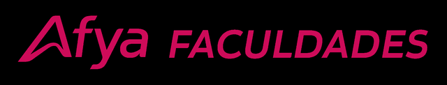

NEXUS TECH / PORTFÓLIO PROFISSIONAL
Daniel Lopes
Soares.
REDES & INFRAESTRUTURA DE TI
Conectando tecnologias. Construindo infraestruturas. Solucionando desafios.
Atuação em suporte técnico e infraestrutura de redes em ambientes de saúde. Graduação em Redes de Computadores em andamento, com cinco semestres cursados.
PERFIL · 01
Sobre mim
Tecnologia que mantém
pessoas conectadas.
Profissional de TI com atuação em suporte técnico, infraestrutura de redes, instalação, configuração e manutenção de equipamentos. Experiência informada em unidades de saúde (UBS, PSF, policlínicas e hospitais), apoiando conectividade, redes cabeadas e sem fio e suporte a usuários.
Minha formação em Redes de Computadores está em andamento. Esta página reúne conhecimentos, práticas profissionais e demonstrações técnicas, com cada conteúdo identificado pelo que realmente é.
Conheça minha formaçãoCONHECIMENTO · 02
Competências técnicas
Áreas de atuação e estudo. Zabbix está em aprendizado.
GALERIA TÉCNICA · 03
Ecossistema de infraestrutura
Ilustrações de referência de equipamentos e tecnologias. Não representam fotos de itens pessoais nem comprovam uso prático.
FORMAÇÃO · 04
Conhecimento em evolução
GRADUAÇÃO EM ANDAMENTO
Redes de Computadores
5 semestres cursados

NEXUS LEARNING SYSTEM
Temas acadêmicos correlatos
Áreas de estudo relacionadas à formação. Não indicam, por si só, disciplinas oficialmente cursadas.
PRÁTICA & ESTUDO · 05
Projetos e arquiteturas
Demonstrações e estudos estão separados da experiência profissional informada.
NETWORK EXPLORER
Diagramas interativos
Selecione um cenário para explorar a topologia de referência.
Arquiteturas conceituais de demonstração. Não descrevem uma instalação específica.
NEXUS MONITOR · 06
Painel de observabilidade
Interface demonstrativa de métricas de rede e infraestrutura. Nenhum valor é medido em uma rede real.
EXPERIÊNCIA · 07
Suporte onde a conexão importa
ATUAÇÃO INFORMADA
Infraestrutura em
ambientes de saúde
UBS · PSF · policlínicas · hospitaisCENTRAL DE DOCUMENTOS · 08
Formação & documentos
Arquivos pessoais serão disponibilizados quando adicionados ao projeto. Nenhum certificado ou documento é presumido.
CANAL DIRETO · 09
Vamos conectar
ideias.
Para oportunidades em redes, infraestrutura e suporte de TI.
Daniel Lopes Soares
REDES & INFRAESTRUTURA DE TI
APONTE A CÂMERA
Escaneie para abrir uma conversa no WhatsApp.